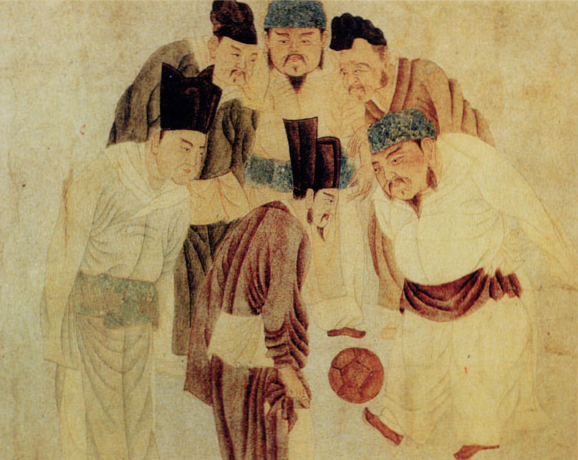

Football is a family of team sports in which the object is to get the ball over a goal line, into a goal, or between goalposts using merely the body (by carrying, throwing, or kicking).[1][2][3] Unqualified, the word football generally means the form of football that is the most popular where the word is used. Sports commonly called football include association football (known as soccer in Australia, Canada, South Africa, the United States, and sometimes in Ireland and New Zealand); Australian rules football; Gaelic football; gridiron football (specifically American football, arena football, or Canadian football); International rules football; rugby league football; and rugby union football.[4] These various forms of football share, to varying degrees, common origins and are known as "football codes". There are a number of references to traditional, ancient, or prehistoric ball games played in many different parts of the world.[5][6][7] Contemporary codes of football can be traced back to the codification of these games at English public schools during the 19th century, itself an outgrowth of medieval football.[8][9] The expansion and cultural power of the British Empire allowed these rules of football to spread to areas of British influence outside the directly controlled empire.[10] By the end of the 19th century, distinct regional codes were already developing: Gaelic football, for example, deliberately incorporated the rules of local traditional football games to maintain their heritage.[11] In 1888, the Football League was founded in England, becoming the first of many professional football associations. During the 20th century, several of the various kinds of football grew to become some of the most popular team sports in the world.[12]

The various codes of football share certain common elements and can be grouped into two main classes of football: carrying codes like American football, Canadian football, Australian football, rugby union and rugby league, where the ball is moved about the field while being held in the hands or passed by hand, and kicking codes such as association football and Gaelic football, where the ball is moved primarily with the feet, and where handling is strictly limited.
Two teams usually have between 11 and 18 players; some variations that have fewer players (five or more per team) are also popular.[15] A clearly defined area in which to play the game. Scoring goals or points by moving the ball to an opposing team's end of the field and either into a goal area, or over a line. Goals or points resulting from players putting the ball between two goalposts. The goal or line being defended by the opposing team. Players using only their body to move the ball, i.e. no additional equipment such as bats or sticks. An inflatable ball.
There are conflicting explanations of the origin of the word "football". It is widely assumed that the word "football" (or the phrase "foot ball") refers to the action of the foot kicking a ball.[16] There is an alternative explanation, which is that football originally referred to a variety of games in medieval Europe that were played on foot.[17] There is little conclusive evidence for either explanation.